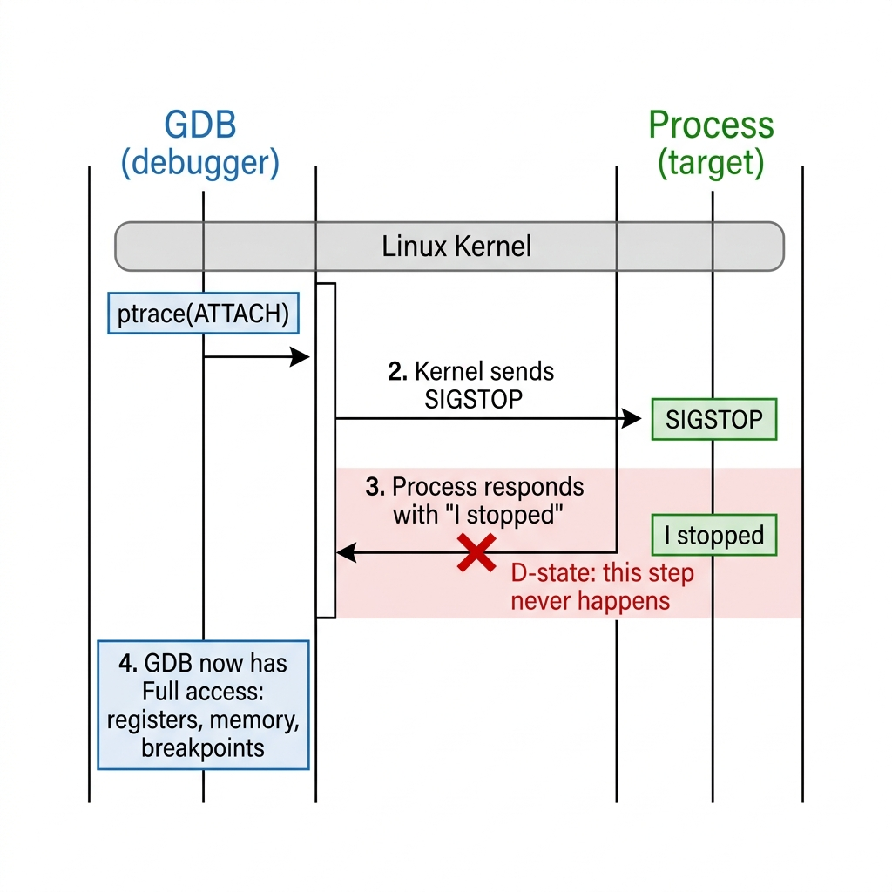

If you've ever had a process freeze so hard that even kill -9 couldn't save you, you've probably encountered a D-state process. And if you've tried to debug one, you've discovered something uncomfortable: the tools we rely on — GDB, gcore, strace — all silently fail.
This is the story of how we built a tool to debug the un-debuggable. But before we get there, we need to understand why debuggers break in the first place.
The ptrace Contract
Every debugger on Linux — GDB, lldb, strace, even gcore — relies on a single system call to do its job: ptrace().
Here's the simplified version of what happens when you type gdb -p 1234:
1. GDB calls ptrace(PTRACE_ATTACH, 1234, ...)
2. The kernel sends SIGSTOP to PID 1234
3. PID 1234 receives the signal, stops executing, enters state 'T' (traced)
4. GDB calls waitpid() — the kernel says "yes, 1234 has stopped"
5. Now GDB can read registers, memory, set breakpoints — full controlThis is a cooperative protocol. GDB asks the kernel to stop the process, the kernel delivers a signal, and the process acknowledges it by actually stopping. Only then does GDB get access.
Think of it like a phone call. GDB dials the process, the process picks up, and now they can talk. The entire debugging model assumes that the other side will pick up the phone.

But what if the process can't pick up?
What is D-State?
Linux tracks every process in one of several states. You've seen them in ps or top:
| State | Letter | Meaning |
|---|---|---|
| Running | R |
Currently executing or ready to run |
| Sleeping | S |
Waiting for something (interruptible) |
| Disk Sleep | D |
Waiting for I/O (uninterruptible) |
| Zombie | Z |
Finished but parent hasn't collected exit status |
| Stopped | T |
Paused by a signal or debugger |
The S state (interruptible sleep) is the normal "waiting" state. When your program calls read() on a network socket, it goes to sleep in S state. If a signal arrives — like SIGSTOP from GDB — the kernel wakes it up to handle the signal. No problem.
D state is different. D stands for "Disk sleep" or, more precisely, TASK_UNINTERRUPTIBLE. When a process is in D-state, the kernel has made a deliberate decision: this process will not be woken up by signals. Period. Not SIGSTOP. Not SIGKILL. Not anything.
Why would the kernel do this?
Because some operations cannot be safely interrupted.
Imagine a process is in the middle of writing metadata to a filesystem. The on-disk data structure is half-updated. If the kernel let a signal interrupt this operation, the filesystem could be left in a corrupted state. So the kernel says: "No. This thread stays asleep until the I/O completes. Nothing else matters."
This is a reasonable design for operations that take microseconds — a disk write, a page fault, an NFS lookup. The process goes into D-state, the I/O completes almost instantly, and it comes back. You'd never even notice.
The problem is when the I/O never completes.
The Debugger's Blind Spot
Let's try it. Here's the real setup — a Vagrant VM running Arch Linux with CVMFS mounted. We run tree on a CVMFS path, which triggers a D-state:
vagrant@arch D-state-debugger]$ ps aux | grep D
USER PID %CPU %MEM VSZ RSS TTY STAT START TIME COMMAND
vagrant 1344 0.0 0.0 5980 4228 pts/1 D+ 17:36 0:00 tree /cvmfs/alice.cern.chThere's the D. The tree process is stuck waiting on a CVMFS FUSE lookup that never returns. Let's try attaching GDB:
$ sudo gdb -p 1344
Attaching to process 1344...And... nothing. GDB hangs. Forever.
Here's what's happening under the hood:
1. GDB calls ptrace(PTRACE_ATTACH, 1234)
2. The kernel marks 1234 as "being traced" — this part succeeds
3. The kernel tries to deliver SIGSTOP to 1234
4. But 1234 is in TASK_UNINTERRUPTIBLE — signals are not delivered
5. GDB calls waitpid(1234) expecting to hear "process has stopped"
6. waitpid() blocks forever because the process will never stop
7. Now GDB itself is stuckLet's try gcore (generates a core dump from a live process):
$ sudo gcore 1344
# ... hangs forever (uses ptrace internally)How about kill -9?
$ sudo kill -9 1344
# Nothing happens. The process is still there.
$ ps aux | grep D
vagrant 1344 0.0 0.0 5980 4228 pts/1 D+ 17:36 0:00 tree /cvmfs/alice.cern.chEven SIGKILL — the so-called "unblockable" signal — doesn't work. The kernel queues the signal, but D-state means "don't deliver signals," so SIGKILL just sits in the pending queue forever. The process will only die when (if) the I/O operation it's waiting on eventually completes or times out. In our CVMFS case, that never happens.
We're completely blind. The process is stuck, we can't debug it, we can't kill it, and we have no idea where in the code it's stuck. The only diagnostic we have is the letter D in the ps output.
Or so we thought.
The /proc Backdoor
Here's the key insight that makes everything else possible: /proc/<pid>/ still works for D-state processes.
Why? Because ptrace and /proc take completely different paths through the kernel:
The /proc filesystem is not a real filesystem. It's a virtual interface maintained by the kernel that exposes process internals as readable files. And critically, reading from /proc/<pid>/maps or /proc/<pid>/mem does not use the ptrace mechanism. It doesn't send signals. It doesn't need the process to cooperate. The kernel simply reads its own internal data structures and presents them to you.
# This works even when the process is in D-state:
# (using PID 1344 from our actual test run)
$ cat /proc/1344/maps # Memory map (all loaded libraries)
$ cat /proc/1344/task/1344/syscall # Current syscall + RSP + RIP registers
$ xxd /proc/1344/mem # Raw process memory (with pread)
$ cat /proc/1344/auxv # Auxiliary vectorWe have everything:
- Memory layout — every loaded library, every heap/stack region
- CPU registers — at least RSP (stack pointer) and RIP (instruction pointer) for every thread
- Raw memory — the actual bytes of the process's address space
- Thread list — every thread via
/proc/<pid>/task/
That's all the ingredients of a core dump. We just need to assemble them into an ELF file that GDB can read.
And that's exactly what we built. A tool that constructs a valid ELF core dump from a D-state process by reading /proc directly — no ptrace, no signals, no cooperation needed.
In Part 2, we'll dive into the ELF core dump format itself — what's actually inside a core file, byte by byte, and why each piece matters for GDB to give us a backtrace.